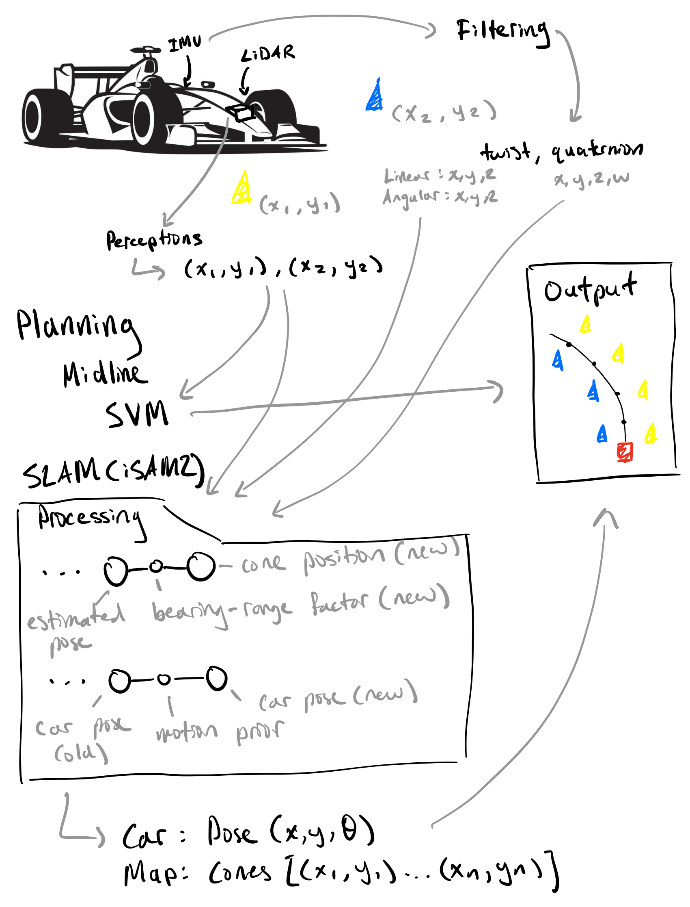

Implementation
SLAM Nodes
There are three primary nodes for SLAM.
real_data_slam_node_gps
real_data_slam_node_no_gps
controls_sim_slam_node
The first two nodes are used to run on real data depending on whether we have GPS or not. The last node is used to test our SLAM implementation in-house with a rosbag recorded on our in-house controls sim.
Execution and Data flow
Where does iSAM2 run (CPU/GPU)?
The iSAM2 SLAM implementation runs entirely on the CPU. It is written in C++ and uses GTSAM, a CPU-optimized factor graph library. No GPU acceleration is used, as iSAM2 is designed for incremental updates that are efficient enough for real time execution on modern multi-core CPUs. Our SLAM nodes run within a ROS 2 Node written in C++ and leverage threading when available (through TBB), although much of the computation remains serial due to the incremental nature of the updates.
What is the data flow?
Input:
Cone observations from the perceptions pipeline (2D positions of blue/yellow cones)
IMU and velocity estimates
Processing:
Each cone observation is added as a bearing-range factor connecting the vehicle pose to cone landmarks
The current vehicle pose (if available) is added as a new variable in the Factor Graph
Motion priors are added between sequential poses (using IMU/velocity)
This information is fed into iSAM2 which incrementally updates the estimates of all previous poses and landmark (cone) positions
Output:
Additional Considerations
While the current SLAM and path planning system is designed to be efficient and robust, several challenges may arise in practice:
Sensor Noise and Drift: GPS and IMU measurements can be noisy or suffer from drift. This can lead to inaccurate localization or erroneous map updates.
Data Association Ambiguity: Identifying whether a newly observed cone corresponds to a previously seen cone (data association) is challenging in cluttered environments. Misassociations can degrade map quality and cause localization accuracy.
Tuning Sensitivity: SLAM performance heavily depends on parameters such as the Mahalanobis distance threshold and noise models. Poorly tuned parameters can result in either missed associations or false positives.
Failure Recovery: If the system becomes mislocalized or the factor graph diverges due to accumulated error, recovering gracefully is non-trivial and may require additional loop closure strategies or reinitialization.
Real World Edge Cases: Lighting conditions, partial occlusions, or uneven terrain can cause discrepancies between perception and ground truth, which affect downstream SLAM and planning modules.